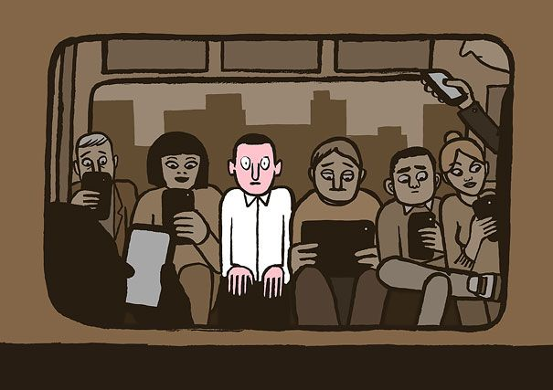

Ketergantungan teknologi

Ketergantungan terhadap teknologi telah menjadi salah satu masalah serius dalam masyarakat modern saat ini. Semakin canggihnya perkembangan teknologi memberikan kenyamanan dan kemudahan dalam kehidupan sehari-hari, namun juga membawa risiko yang tak dapat diabaikan. Banyak orang terjebak dalam lingkaran konsumsi konten digital tanpa batas, menghabiskan berjam-jam di depan layar perangkat elektronik. Berikut ini adalah cara untuk memerangi ketergantungan teknologi :
- Pilih aktivitas yang tidak melibatkan teknologi sama sekali. Misalnya, membaca buku fisik, berjalan-jalan di alam bebas, atau bermain olahraga.
- Tetapkan batas waktu harian atau mingguan untuk penggunaan teknologi. Misalnya, tidak menggunakan ponsel atau komputer selama beberapa jam setiap hari.
- Tetapkan zona atau waktu khusus di rumah di mana teknologi tidak diizinkan. Misalnya, ruang makan bisa menjadi zona bebas teknologi.
- Temukan hobi atau aktivitas kreatif seperti melukis, memahat, atau menulis yang tidak memerlukan teknologi.
- Luangkan waktu untuk berolahraga atau melakukan aktivitas fisik lainnya seperti yoga, bersepeda, atau berenang.
- Ajak keluarga atau teman-teman untuk bersama-sama melakukan aktivitas di luar ruangan seperti berkemah, mendaki gunung, atau piknik.
- Dedikasikan waktu untuk meditasi atau latihan kesadaran diri untuk membantu menenangkan pikiran dan mengurangi ketergantungan pada teknologi.
- Pilih sumber belajar offline seperti buku fisik, majalah, atau kursus di luar jaringan.